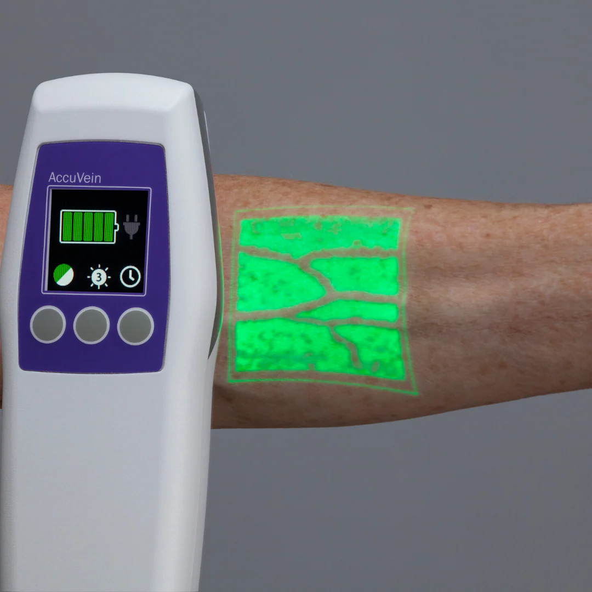

Projects

Neural Net in C++
- ➤Built feedforward neural network framework from scratch in C++
- ➤Supports dynamic stacking of layers to build custom architectures
- ➤Configurable activation functions: ReLU, Sigmoid, Softmax
- ➤Supports random and Xavier initialization for weights
- ➤End-to-end model training using backpropagation

Portable Vein Viewer
- ➤Developing a low-cost handheld vein viewer device
- ➤Implemented modular pipeline for real-time 3D reconstruction
- ➤Uses stereo NIR images captured via Pi cameras
- ➤Deployed on Raspberry Pi 5 for real-time processing

DriveBot: AI Assistant for Renault Triber
- ➤Integrated Renault Triber manual with Flan-T5 LLM using LangChain
- ➤Implemented Retrieval-Augmented Generation (RAG)
- ➤Parsed and chunked manual into semantic sections
- ➤Generated embeddings with all-MiniLM-L6-v2 and indexed via FAISS
- ➤Enabled real-time Q&A without reading lengthy manuals